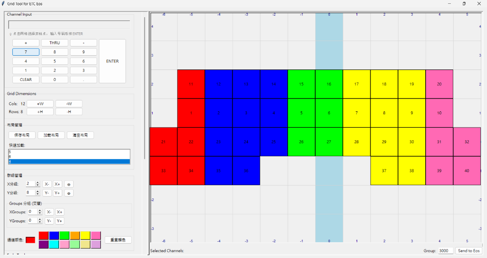

ETC EOS GRID TOOL
Visual Matrix Control for Lighting Pros
OSC Sync
Color Grouping
3D Layout
Open Fade
Visual Matrix Control for Lighting Pros

在 ETC 工作流程中查看矩陣分組、同步行為與 Open Fade 控制操作。
左右翻頁查看功能重點，每次聚焦一個項目。
透過即時 OSC 狀態、矩陣編排與一鍵同步，建立更快速的視覺化編程流程。